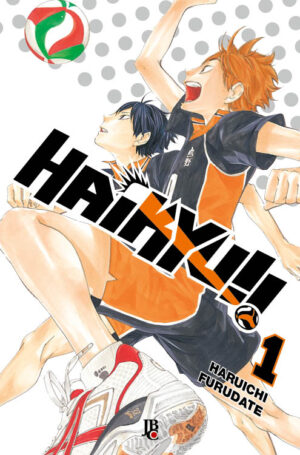

sinopse
O estudante do ensino médio, Shoyo Hinata , fica obcecado por vôlei depois de ver o Karasuno High School jogando nas Nacionais na TV. De baixa estatura, Hinata é inspirado em um jogador que os comentaristas apelidam de 'O Pequeno Gigante', o pequeno mas talentoso ponta- de-lança de Karasuno . Embora inexperiente, Hinata é atlética e tem um salto vertical impressionante. Ele entra para o clube de vôlei de sua escola – apenas para descobrir que é o único membro, o que o força a passar os próximos dois anos tentando convencer outros alunos a ajudá-lo a praticar.
Informações
- Nome:Haikyuu!!
- Nome alternativo: ハイキュー！！
- Tipo: Mangá
- Autor: Haruichi Furudate
- Volumes: 45
- Status: Completo
- Demográfico: Shōnen
- Gêneros: Comédia,Ação,Esportes,Aventura,Drama,Vida escolar,Slice of Life
- Editora: Shueisha
- Publicado em: 2012